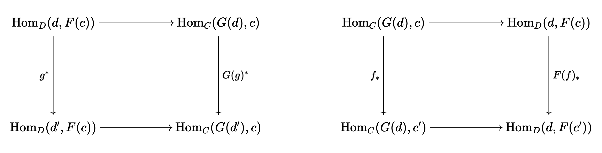

Kontsevich's deformation quantization of Poisson manifolds
Table of Contents
Originally posted:
1. Introduction
The goal of this post is to go through the details of Kontsevich's seminal 1997 paper proving that there is a canonical deformation quantization for every Poisson manifold. This post could end up being very long, but I really want to get this right.
2. Some background
The idea of deformation quantization is that the algebra of quantum observables, which is non-commutative, should be obtained as a "deformation" of the commutative algebra of classical observables, with respect to some Planck-constant parameter \(\hbar\), controlling the "quantum-ness" (i.e. we recover the classical algebra when we take \(\hbar \to 0\)). To be more specific, our non-commutative product is called a star product:
Definition 2.1. Let \(A = \Gamma(X, \mathcal{O}_X)\) be the \(\mathbb{R}\) -algebra of smooth functions on finite-dimensional smooth manifold \(X\). A differential operator \(D : A \rightarrow A\) is an algebra homomorphism such that in local coordinates \((U, x^1, \dots, x^n)\), \(D(f)\) can be written as
\begin{equation} D(f) = \sum_{|J| \leq k} D(f)_{J} \frac{d^{|J|} f}{dx^J} \end{equation}where \(D(f)_J\) is a smooth function on \(U\). Clearly, differential operators form a ring under addition and composition.
Definition 2.2. A star product is an associative, \(\mathbb{R}[[\hbar] ]\) -linear (formal power series in \(\hbar\) with real coefficients) on \(A[[\hbar] ]\) (in particular, \(A[[\hbar] ]\) is an \(\mathbb{R}[[\hbar] ]\) -module, in the obvious way) which satisfies for \(f, g \in A \subset A[[\hbar] ]\),
\begin{equation} f \star g = fg + \hbar B_1(f, g) + \hbar^2 B_2(f, g) + \cdots = fg + \sum_{k \geq 1} \hbar^k B_k(f, g) \end{equation}where each \(B_k : A \otimes A \rightarrow A\) is a bi-differential operator. This product must extend linearly to the entire algebra, namely
\begin{equation} \label{eq:a} \left( \sum_{n \geq 0} f_n \hbar^n \right) \star \left( \sum_{m \geq 0} g_m \hbar^m \right) = \sum_{n, m \geq 0} f_n g_m \hbar^{n + m} + \sum_{n, m \geq 0, \ell \geq 1} B_{\ell}(f_n, g_m) \hbar^{n + m + \ell} \end{equation}Proposition 2.1. The collection of automorphisms of \(A[[\hbar] ]\) of the form
\begin{equation} \sum_{n \geq 0} f_n \hbar^n \mapsto \sum_{n \geq 0} f_n \hbar^{n} + \sum_{n \geq 0, m \geq 1} D_m(f_n) \hbar^{n + m} \end{equation}form a group under composition, where each \(D_m : A \rightarrow A\) is a differential operator. Moreover, these automorphisms act on the collection of star products, in the sense that if \(D(\hbar) = 1 + \sum_{m \geq 1} D_m \hbar^{m}\) is such an automorphism and \(\star\) is a star product, then
\begin{equation} f(\hbar) \star' g(\hbar) = D(\hbar) (D(\hbar)^{-1}(f(\hbar)) \star D(\hbar)^{-1}(g(\hbar))) \end{equation}is also a star product.
Proof. Of course, the group operation is just the usual multiplication of formal power series of the form \(D(\hbar)\), so
\begin{equation} D(\hbar) \cdot D'(\hbar) = 1 + D(\hbar) + D'(\hbar) + \sum_{n, m \geq 1} (D_n \circ D_m) \hbar^{m + n} \end{equation}where we know that composition of derivations is a derivation. It is easy to see we have the identity and associativity, and closure (sums and compositions of derivations are derivations). To prove that we have an inverse, we use the fact that a formal power series over a ring has a multiplicative inverse if and only if the zeroth-degree term is invertible in the ring. Of course, \(1\) is invertible, so we can write down the inverse of \(D(\hbar)\) using the usual inversion formula for formal power series. We have \(D(\hbar)^{-1} = 1 + \sum_{m \geq 1} F_m \hbar^m\) where
\begin{equation} F_m = - \sum_{k = 1}^{m} D_k \circ F_{m - k} \end{equation}for \(m \geq 1\). In addition, it is clear that when we expand, \(\star'\) is of the form of Eq. \eqref{eq:a}, as we are composing differential and bi-differential operators. Suppose \(\star'\) is represented in terms of bi-differential operators \(B_{\ell}'\). If we can show that the \(B_{\ell}'\) are associative, then the \(\star'\) product will be as well. It is easy to see that this is equivalent to \(\star'\) being associative when acting on \emph{functions}. We can prove this readily:
\begin{align} h \star' (f \star' g) &= h \star' D(\hbar)(D(\hbar)^{-1}(f) \star D(\hbar)^{-1}(g)) \\ &= D(\hbar)(D(\hbar)^{-1}(h) \star (D(\hbar)^{-1}(f) \star D(\hbar)^{-1}(g))) \\&= D(\hbar)((D(\hbar)^{-1}(h) \star D(\hbar)^{-1}(f)) \star D(\hbar)^{-1}(g)) \\ &= (h \star' f) \star' g \end{align}where we use the associativity of \(\star\). \(\blacksquare\)
We will be interested in \(\star\) -products up to "gauge equivalence" (i.e. \(\star\) and \(\star'\) are equivalent if they are related as above). In fact, if \(S\) denotes the set of all star products, it is easy to show that \(D(\hbar) \times \star \mapsto \star'\) is a group action.
2.1. Aside on category theory and Hochschild homology
Now, let us go on a brief aside and review the concept of Hochschild homology, which is a homology theory for algebras. To properly motivate this homology theory, we will need an aside on the aisde, into some categorical language.
Definition 2.3. Let \(A\) be an algebra over ring \(R\). Let \(M\) be an \(M\) -module. We let \(C_n(A, M) = M \otimes A^{\otimes n}\) where all tensor products are over \(R\). We also define the boundary operators
\begin{align} \end{align}3. Appendix 1: category theory
I am relegating the introduction of certain categorical language to this section, an appendix.
Definition A.1.1 (Adjoint). The best, succinct way to think of a functor \(G : D \rightarrow C\) adjoint to functor \(F : C \rightarrow D\) is that \(G\) is the most efficient way to systematically "solve the problem" posed by \(F\). If \(F\) is, for example, a forgetful functor which throws away some of the structure of category \(C\), is there a method with reconstructs an element of \(D\) which imposes the minimal amount of extra structure possible? If such a method exists, and is functorial, in the sense that it works the same for any object, then it can be described via a functor \(G : D \rightarrow C\) which is adjoint to \(F\).
Let us now be more precise. We say that functors \(F : C \rightarrow D\) and \(G : D \rightarrow C\) are adjoint is there exists a "natural bijection" between the morphism sets \(\text{Hom}_D(d, F(c))\) and \(\text{Hom}_C(G(d), c)\) for \(d \in \text{Obj}(D)\) and \(c \in \text{Obj}(C)\). By "natural", we mean that for a fixed \(c \in \text{Obj}(C)\) or a fixed \(d \in \text{Obj}(d)\), the following diagrams commute:

for every arrow \(g : d' \rightarrow d\) in \(D\) and \(f : c \rightarrow c'\) in \(C\). Even though this definition is the most common, it is not the most intuitive. A better definition is via universal morphisms. When we find an object which satisfies a universal property, we are effectively finding the "most efficient" object which satisfies some desired property. An adjoint functor is a technique to define such universal objects at a global, categorical level, rather than locally. To be more specific,
Example A.1.1 (Free groups). I went into a lot of detail regarding the construction of free groups in my blog post on groupoid Seifert-Van Kampen theorem. This is probably one of the most accessible examples of an adjoint functor.
In particular, suppose we have set \(S\). For each element \(s \in S\), we can define a infinite cyclic group which is labelled by \(s\). For convenience, we take elements of this cyclic group to be denoted by \(s^n\) for \(n \in \mathbb{Z}\), and we define \(\cdot\) as the operation \(s^{n} \cdot s^{m} = s^{n + m}\). We also use \(1\) to denote \(s^0\). Call this group \(G_s\). We showed in the Seifert-Van Kampen post that there exists an external free product of the groups \(G_s\), for all \(s \in S\), which we denote \(G_S\). We actually had a particular name for \(G_S\): the free group on generators \(S\). Remember how we defined the external free product of groups: we said that \(G\) was an external free product of \(G_{\alpha}\) if there existed monomorphisms \(i_{\alpha} : G_{\alpha} \rightarrow G\) such that for any collection of morphisms \(\varphi_{\alpha} : i_{\alpha}(G_{\alpha}) \rightarrow H\), there exists a unique morphism \(\varphi : G \rightarrow H\) which extends the \(\varphi_{\alpha}\). For the particular case that the \(G_{\alpha}\) are the cyclic groups \(G_s\). Note that each monomorphisms \(i_{s} : G_s \rightarrow G\) can be uniquely represented by a unique element of \(G\). Thus, each collections of monomorphisms \(\{i_s\}_{s \in S}\) can be uniquely represented by a set map \(i : S \rightarrow G\). Thus, one can rephrase the property which characterizes the free group as follows: \(G\) is a free group of generators \(S\) if there is a set map \(i : S \rightarrow G\) such that each \(\langle i(s) \rangle\) is infinite cyclic, and for any collection of morphisms, \(\varphi_s : \langle i(s) \rangle \rightarrow H\), there is a unique \(\varphi : G \rightarrow H\) extending them.
Something we can notice: for some set map \(i : S \rightarrow G\) to satisfy the desired criterion, it must a priori be injective. If we had \(i(s) = i(s') \neq 0\), and we chose different homomorphisms \(\varphi_s, \varphi_{s'}\) into some group (which we can always do), then we obviously couldn't find an extension \(\varphi\). It follows immediately that any collection of \(\{\varphi_s\}\) can be uniquely represented as a set map \(f : S \rightarrow H\). Thus, the property we must satisfy becomes the following: we need an a set map \(i : S \rightarrow G\) such that for any set map \(f : S \rightarrow H\) (where \(H\) is a group), there exists a unique morphism \(\varphi : G \rightarrow H\) such that \(\varphi \circ i = f\). In addition, we require that all of the subgroups \(\langle i(s) \rangle\) are free. As it turns out, we can drop this assumption. Suppose \(\langle i(s) \rangle\) were not free, so \(i(s)^n = 1\) for some \(s\) and \(n \neq 0\). Pick \(f : S \rightarrow \mathbb{Z}\) to send every \(s \in S\) to \(2\), let \(\varphi : G \rightarrow \mathbb{Z}\) be the unique morphism where \(\varphi \circ i = f\). We then must have \(\varphi(i(s)) = f(s) = 2\), but we also have
\begin{equation} 0 = \varphi(1) = \varphi(i(s)^n) = \varphi(i(s))^n = 2n \neq 0 \end{equation}which is a contradiction. Thus, \(G_S\) is a free group with generators \(S\) if there is a set map \(i : S \rightarrow G_S\) such that for any group \(H\) and set map \(f : S \rightarrow H\), there exists a unique morphism \(\varphi : G_S \rightarrow H\) with \(\varphi \circ i = f\).
Let us recap what we have done: given some \(S \in \text{Obj}(\textbf{Set})\), we have described the property some \(G = \text{Free}(S) \in \text{Obj}(\textbf{Grp})\) must satisfy for \(\text{Free}(S)\) to be a "free group with generators \(S\)", in terms of morphisms in the categories \(\textbf{Set}\) and \(\textbf{Grp}\). This is a local procedure: we have "defined" \(\text{Free}(S)\) via a particular set \(S\) in \(\textbf{Set}\) and arrow \(i\) from \(S \in \textbf{Set}\) to \(\text{For}(\text{Free}(S)) \in \text{For}(\textbf{Grp})\) (where \(\text{For}\) is the forgetful functor which gets rid of group structure). As it turns out, this strategy works globally: we can actually think of \(\text{Free}\) as a functor from \(\textbf{Set}\) to \(\textbf{Grp}\): it is adjoint to \(\text{For}\), the forgetful functor. This is the prototypical example one should always carry.
Let us